普通物理骰子——结果导向，
软件骰子——分析建议导向，缺乏物理触感体验
以自己的性格回应这个结果 用户体验的不只是一次随机结果，而是一段可以持续的互动。app可以记住用户每次想要决策的内容，并根据这个适应性调整咔卟的反应
随身携带 叽里咕噜忙忙碌碌的微生物——感受到强烈摇晃会骂骂咧咧、有时会触发技能、小巧方便好养活就像办公室里养多肉一样的心理——规则：需要互动来保持自己的生命状态（互动包括日常随手的使用、冥想、玄学决策等）：不互动会发出低生命状态的音调震动反馈；高生命值会随机触发一些技能表现：唱歌、模拟人类音调讲话等——主打慢性陪伴（app辅助显示血条➕加附加功能）——玄学决策（在这个过程中会有生命反应与其他骰子和软件类似产品区别开）、抓握捏捏配合冥想解压（草履虫看着也挺解压）、外观上：在工位可以当装饰和营造角落生物来治愈和改变心情、外出携带可以作为美观的配饰，玩的时候也可以随意玩，方便好养活还能给出生命反馈；同时为了激励持续使用和避免无趣
基础玩法部分：
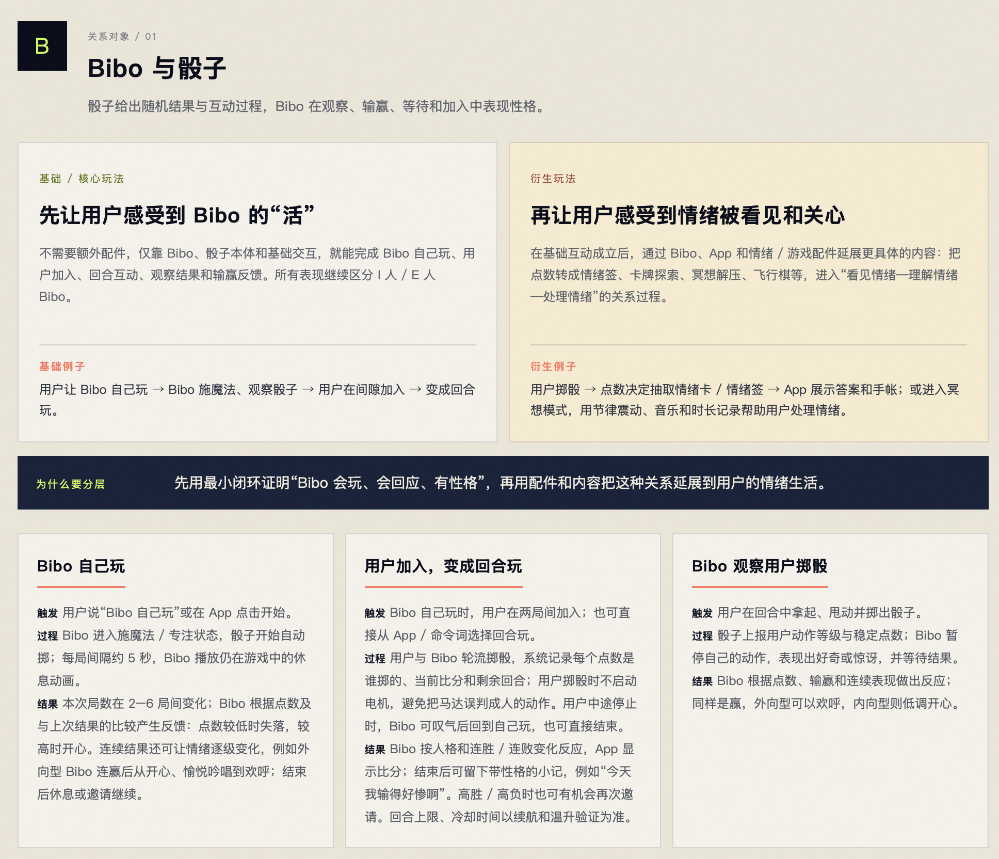
随身共处型微生物产品思路——慢陪伴、共处型
本身除了震动随机翻滚可以拓展延伸的玄学决策和解压冥想没有差异性——通过物理骰子、或纯软件app就能完成，其实不能作为主打功能定位，但可以作为附带的互动方式
- 产品定位：慢陪伴的：随身携带的微生物
打造一个叽里咕噜、忙忙碌碌的微型生命体。感受到强烈摇晃时会骂骂咧咧，有时还会触发特殊技能。产品小巧、方便携带、好养活，类似于在办公室养一盆多肉，给日常生活增添陪伴和乐趣。
- 生命状态与互动规则
需要通过互动来维持生命状态，互动方式包括日常随手把玩、冥想解压、玄学决策等。
- 低生命值： 长时间不互动时，通过特定音调和震动发出反馈。
- 高生命值： 随机触发不同的技能表现，例如唱歌、模拟人类音调讲话等。
- 核心使用场景
- 慢性陪伴： 主打长期、轻量的日常陪伴，通过 App 辅助显示生命值，并提供其他附加功能。
- 日常随机使用和互动
- 玄学决策： 用户通过摇骰子进行随机决策。骰子在决策过程中会产生生命反应，与普通骰子及类似软件产品形成差异。
- 冥想解压： 通过抓握、捏压等触觉互动，配合冥想功能帮助用户放松。微生物本身的形态也具有一定的解压和治愈感。
- 工位装饰： 在工位上作为装饰，营造治愈的「角落生物」，帮助用户调节心情。
- 外出携带： 作为美观的随身配饰，既可以日常佩戴，也可以随时拿出来把玩。
- 持续使用与新鲜感
在保证产品小巧便携、方便把玩、好养活，并能持续提供生命反馈的基础上，通过生命状态变化、通过互动会自然增加生命值 解锁随机技能表现如：唱歌、模拟人类音调讲话等及 App 附加功能，激励用户持续使用，避免体验逐渐变得无趣。
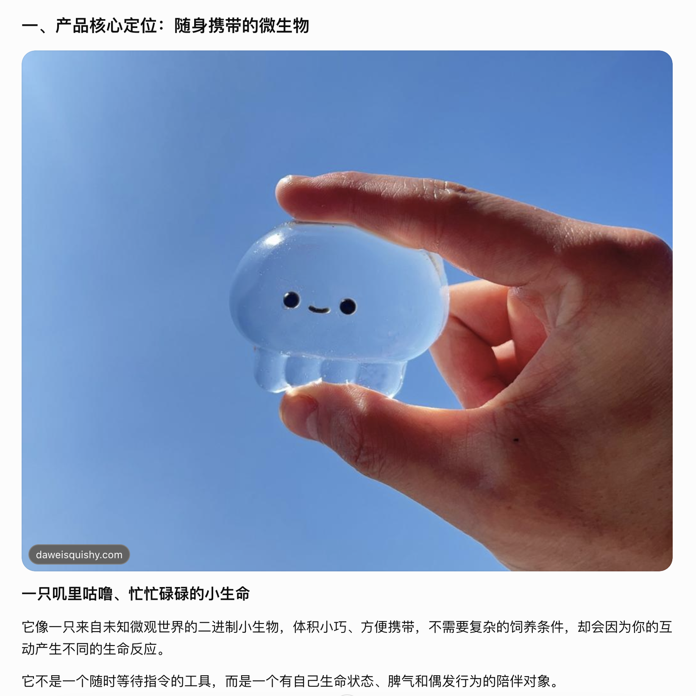
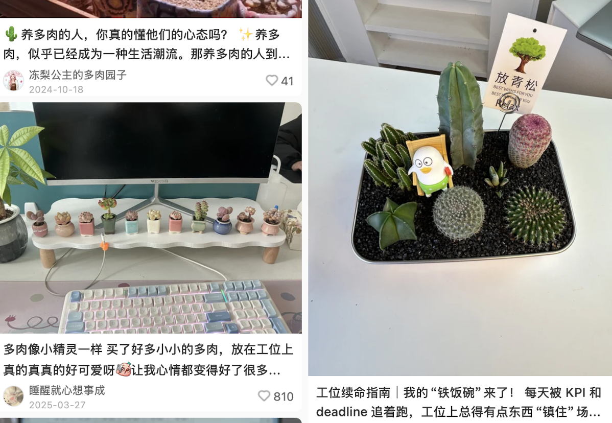
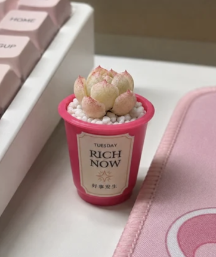
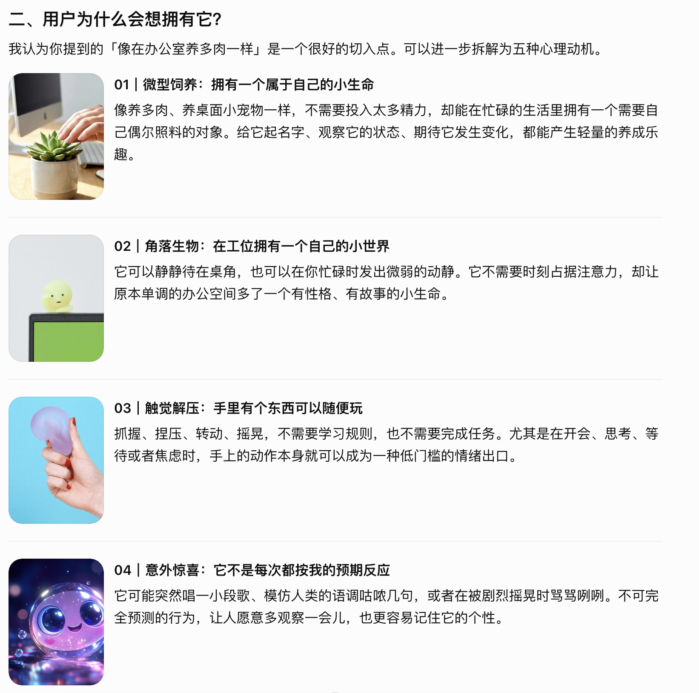
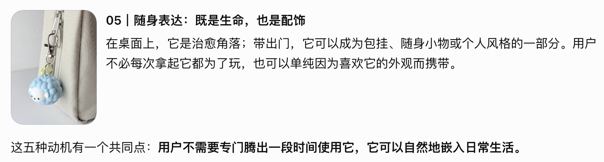
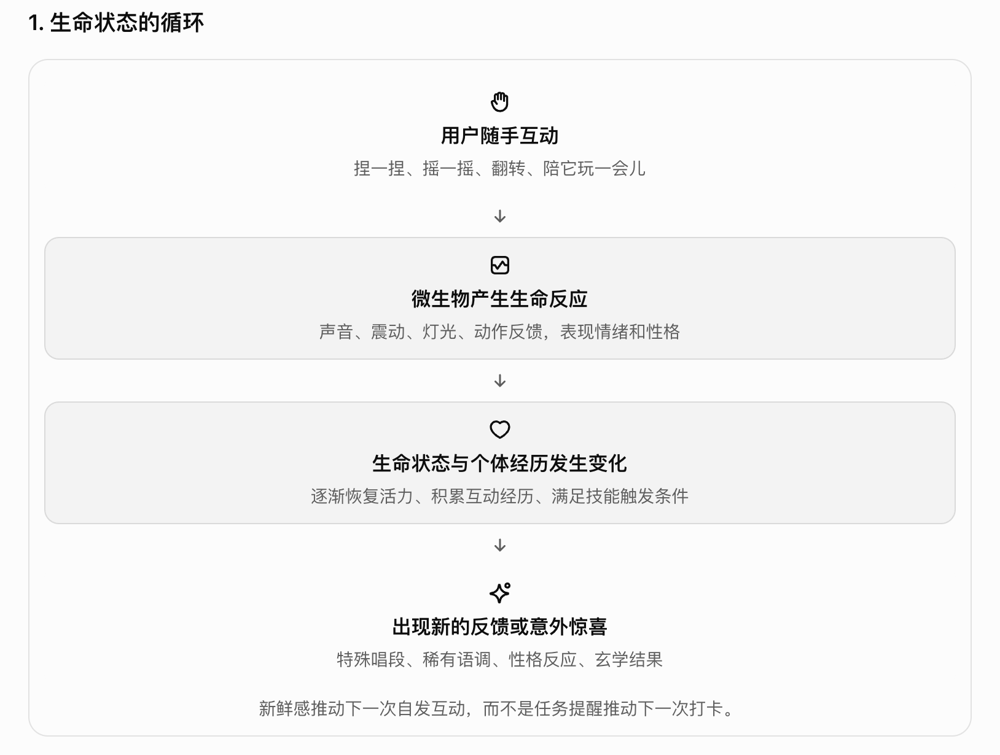
支柱一：慢性陪伴
核心差异
它需要互动，才能保持活力。
- 互动频率与生命状态相关。
- 长时间没有互动，发出低生命状态的音调或轻微震动。
- 生命状态良好时，随机解锁或触发特别表现。
- App 提供生命值、状态变化和近期互动记录。
核心不是惩罚用户忘记照顾它，而是让用户逐渐建立「它最近怎么样」的关心。
支柱二：生命反应（根据用户行为数据——通过震动翻滚、声音来表达自己的情绪反应）
它不是执行命令，而是在表达自己。
- 摇得太猛，会抗议、抱怨或骂骂咧咧。
- 在生命状态较好时（用户通过使用它冥想解压&决策&日常互动使用）：发出舒服、满足的反馈；随机唱歌；模仿人类语调等。
关键是让反馈具有性格，而不只是不同音效的机械组合。
- 互动方式1：随手把玩
没有明确目的，也可以玩得舒服。
- 抓握、捏压、翻转、摇晃等自由动作。
- 配合不同强度的震动、声音声调反馈。
- 将原本无意识的手部动作，转化成与小生命的互动。
- 互动方式2:冥想解压
- 进入冥想模式时，用缓慢的震动和音调节律引导注意力。
- 互动方式3:玄学决策与仪式感
- 随手抛掷+伴随基础生命反应
- 通过app输入问题，有针对性根据某个问题/类似塔罗牌进行次数组合控制滚动次数并解析
支柱三：装饰与随身陪伴
即使不玩，它也有存在的价值。
- 工位上：桌面摆件、角落生物、个性化装饰。
- 外出时：包挂、随身配饰、可以随时拿出来玩的物件。
- 独处时：手边的小生命与情绪出口。
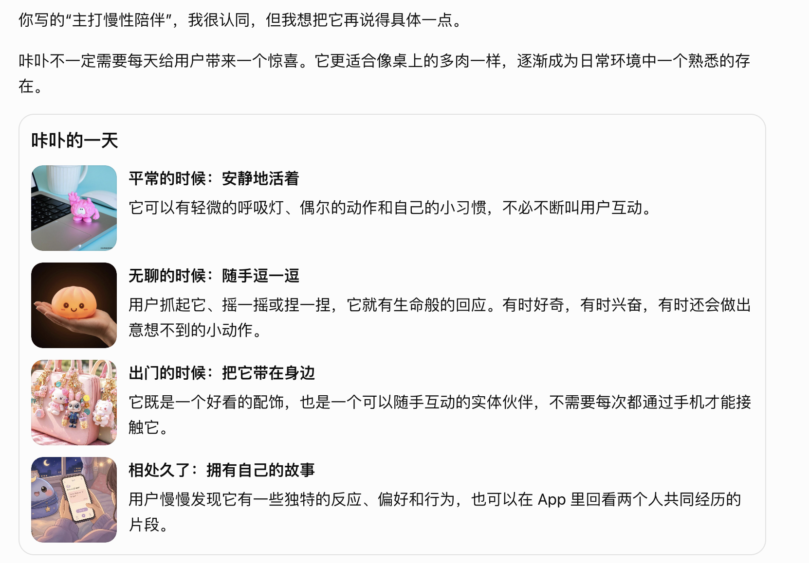
产品主打
慢性陪伴 × 生命反馈 × （随手玩 × 解压玩 × 轻量玄学等互动方式（玩的时候都会伴随生命反应）） × 装饰表达（工位装饰养殖、随身挂）
和bibo的定位差异：
bibo：及时响应的情绪伙伴——用户有需求时，及时感知、回应、理解并陪伴。
咔卟：慢性陪伴的微型生命体——融入日常，通过轻量互动、生命表现和长期相处形成专属感。
两者关系：不是替代，而是互补。 一个侧重回应当下，一个侧重融入生活。
bibo是及时响应的话 咔卟是慢性陪伴：
- bibo：一个能及时感知并回应我的情绪、与我建立深度关系的 AI 陪伴伙伴。
- 咔卟：一个能自然融入日常、通过轻量互动展现生命与性格，并在长期相处中形成专属关系的微型生命体。
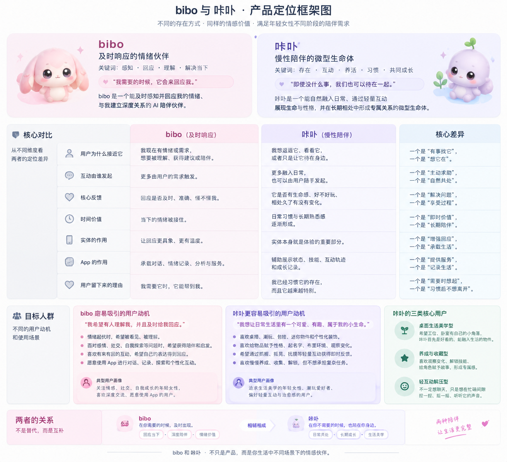
第一，生命反应应该是底层机制。 如果它只是随机唱歌、随机骂人，用户很快就会把它当成音效玩具。真正的生命感来自状态连续性、行为因果、个体差异和偶发惊喜。
第二，「好养活」比「养成丰富」更重要。 你的目标用户可能正在工位上工作、通勤或者处理自己的生活。它应该允许用户随时拿起来，也允许用户安心放下，而不是增加一个需要照顾的负担。
第三，日常互动、玄学、解压和装饰是不同的使用入口，但可以共享同一个生命体。 用户可以为了做决定拿起它，也可以只是捏两下，或者让它待在桌角。每种行为都在丰富同一个陪伴关系，而不是要求用户进入不同的游戏系统。
1、咔卟针对儿童动作数据的及时、非重复性的响应反馈——震动、翻滚、声音
咔卟儿童版：
一、基础互动（互动+生命反应）
摇晃、摇晃强烈程度：回应精度可以较粗：摇晃强度等级来分：L1、L2、L3
L1：轻微震动+弱音调音——表现咔卟苏醒
L2：中等震动+模拟大吼两声——表现咔卟不耐烦
L3：强多次震动+叽里咕噜——表现咔卟被摇晃得生气
滚动（类似微信步数，帮数字咔卟刷微信步数，助力它世界环游）：知道自己的点数（回应精度可以较高）（类似跳一跳：连续滚动时每次点数都越来越大：第一次一点（咔卟稍微开心）：单音+震动一次；第二次两点（咔卟中等开心）：2——4音（音调上扬）+震动两次；第三次三点（咔卟很开心）：更高兴兴奋的表芯；第四次一点：咔卟难过的表现+回归第一次单音这样的逻辑（就是要记住每次摇晃、滚动点数的数据，然后根据数据表现咔卟的情绪）
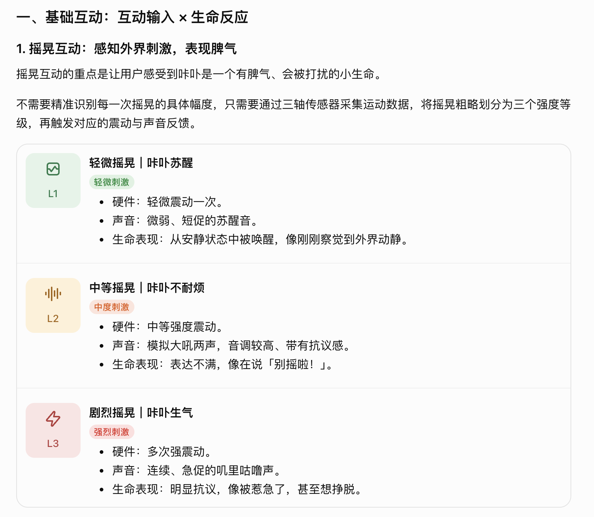
补充一个记忆机制：
同样是 L1 摇晃，如果咔卟刚刚已经被连续摇了很多次，它的反应也可以逐渐从「刚睡醒」变成「有点烦」。
因此，摇晃的反馈不只取决于当次强度，还可以综合：
- 本次摇晃强度：L1 / L2 / L3。
- 短时间内累计被摇晃的次数。
- 距离上一次摇晃的时间。
- 咔卟当前的情绪状态。
这样能避免每次摇晃都播放完全相同的反馈，让它表现出更连续的脾气。
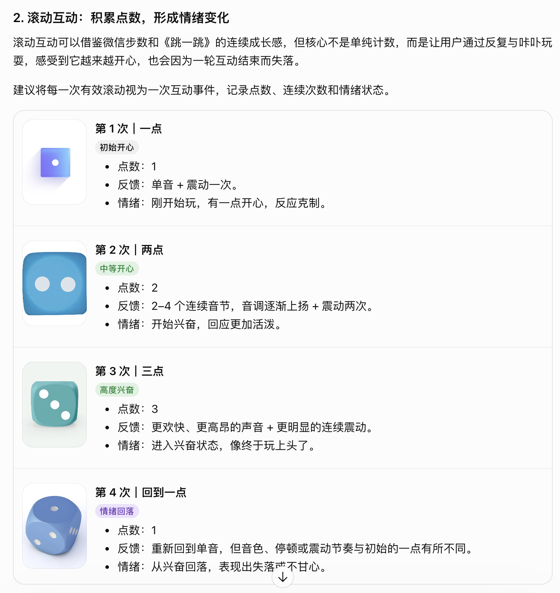
相同的点数，不一定对应相同的情绪。
第一次出现一点，是刚开始玩时的小开心；连续玩到三点之后再次出现一点，则可以是兴奋中断后的失落。
这意味着咔卟需要记住的不是只有点数，还包括点数发生的顺序。
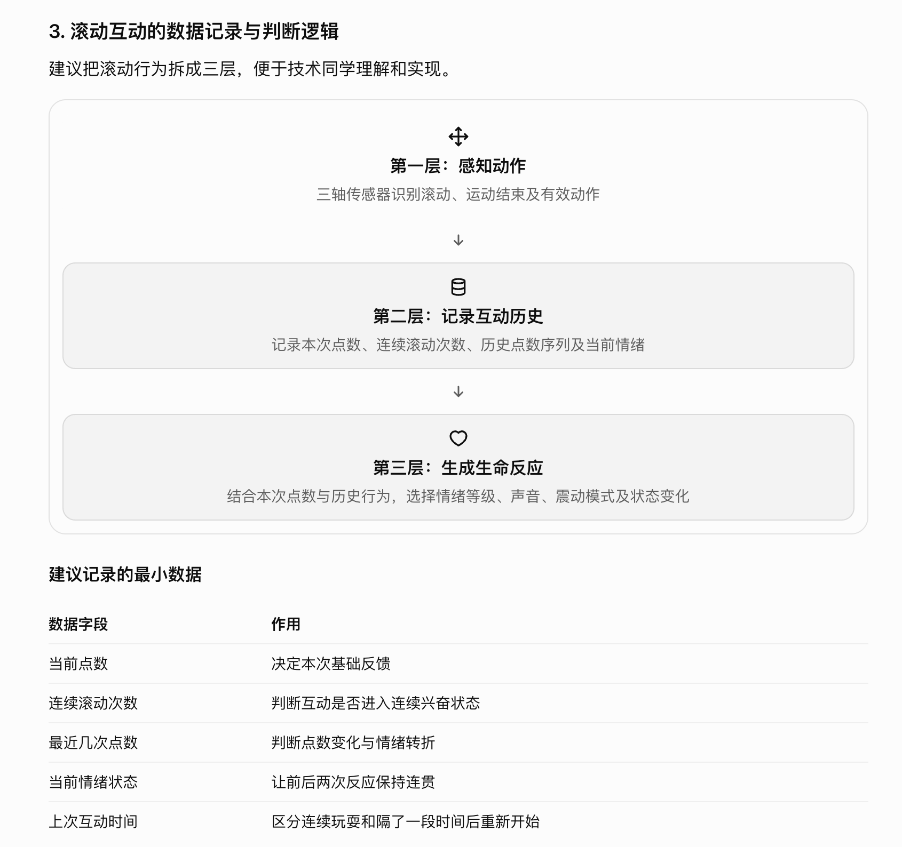
四、最终设计原则
这两类互动可以共享一套生命反应框架：
- 摇晃： 感知外界刺激的强弱，表现苏醒、不耐烦、生气。
- 滚动： 记录连续互动的过程，表现开心、兴奋、失落。
- 历史记忆： 让当前反应受到之前行为的影响。
- 多模态反馈： 声音和震动不是独立的功能，而是共同表达咔卟的情绪。
多个咔卟联动：行为传染集群效应：其中一只受到影响 其他也会有相应反应
行为 01｜聚集与分散
一只咔卟的活动引起另一只注意，其他个体陆续震动或翻滚（因为不能朝某个方向只能随机振动翻滚）
数字表现：个体靠近、短暂聚集、各自离开。
大腸上皮細胞的能量は酪酸｜腸活と夢の氣付きメモ by 腸元氣堂
行为 02｜活动传染
一只咔卟开始活跃，附近其他咔卟也陆续开始移动或发出声音。它们不是同步，而是产生有先后顺序的回应。
数字表现：一个个体先动，其他个体陆续跟随，最后恢复各自的活动节奏。
Microbes Cartoon: Playful Friends in a Landscape | AI Art Generator | Easy-Peasy.AI
行为 03｜偶然群体事件
几只咔卟在一段时间内连续活动，系统可能生成一次短暂的群体事件，例如集体快速振动、翻滚或交替发声。
数字表现：群体事件偶尔发生，而不是每次互动都必然触发。
2、拓展内容丰富度（结合app端）——作为草履虫二进制生物的灵魂漫游系统
儿童玩骰子积累生态旅行能量（想想作为草履虫，就是一直在运动从未在动脑）
在app里面像海绵宝宝和小蜗：咔卟作为二进制生物寄居在app的各个角落——每个sku的咔卟在app会分散个体活动也会集合形成群体事件活动（在app会发现她们数字状态的变化如：持续蠕动+生命底层进食等个体或者群体活动，也是主打静默而有趣的单细胞生物，让你知道一直有这么个东西在那活着）
然后各种玩法和sku不管是有主题还是随机任意的，每天完成互动指标就能转化为咔卟前进的动力，然后在地球进行长途旅行漫游（因为它们没有头脑，所以只能无脑漫游）然后会经过不同站点，每到一个站点可以解锁数字活着实体的咔卟装扮/自己咔卟的丰富语言解锁等，在过程中会偶遇其他咔卟（当然你有两个咔卟可以结伴而行），然后带回旅行日志，具有科普教育作用比如：带回某种微生物的科普资料。每个sku咔卟认识世界的方式不一样：会带回不同生物卡片
核心思路： 在骰子本身的随机摇晃、翻滚等玩法之外，家长通过 App 预设每次骰子的互动主题，拓展翻滚、掷骰子等玩法的内容丰富度，让孩子在完成日常活动的过程中，自然积累能量、解锁技能和兑换咔卟装扮，并将自己的成长成果展示给同学和朋友。
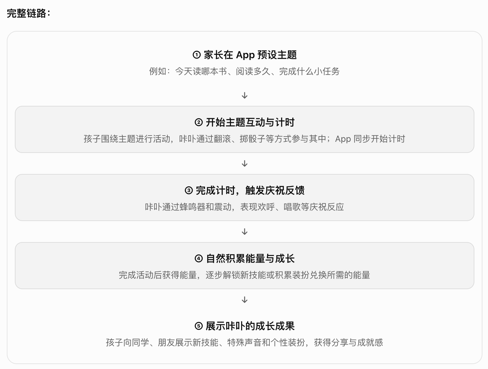
作为草履虫二进制生物的灵魂漫游系统——相当于你和实体咔卟互动的时候，app里它的灵魂就能出窍然后去漫游世界（二进制生物本来就会一直漫无目的地运动和停留），所以你玩相当于就是给它灵魂漫游世界积蓄能量
咔卟是一种单细胞的二进制生物。
它们天生就会漫无目的地运动、停留、觅食、游荡。有时候挤在一起，有时候独自待在某个角落。它们并不总是在思考，也不需要时刻做些什么，只是凭借本能活着。
每一只咔卟都同时存在于两个世界：
- 实体咔卟： 它在孩子身边，是可以被拿起、摇晃、翻滚、触摸的真实生命载体。
- 数字咔卟： 它的灵魂存在于 App 的数字生态中，孩子玩耍时，它的灵魂出窍 然后可以漫游世界进行游荡、探索、停留，也可能遇见其他咔卟也可以结伴而行，会经过不同站点
- 日常旅行会带来什么：
- 会偶遇其他咔卟（当然你有两个咔卟可以结伴而行），然后带回旅行日志，具有科普教育作用比如：带回某种微生物的科普资料。每个sku咔卟认识世界的方式不一样：会带回不同资料：微生物、植物、动物等
- 经过站点会带来什么：
- 可以解锁数字活着实体的咔卟装扮/自己咔卟的丰富语言解锁等
当孩子拿起实体咔卟玩耍时，互动产生的能量就会被传递给数字世界中的它，让它有机会进行更远的漫游。
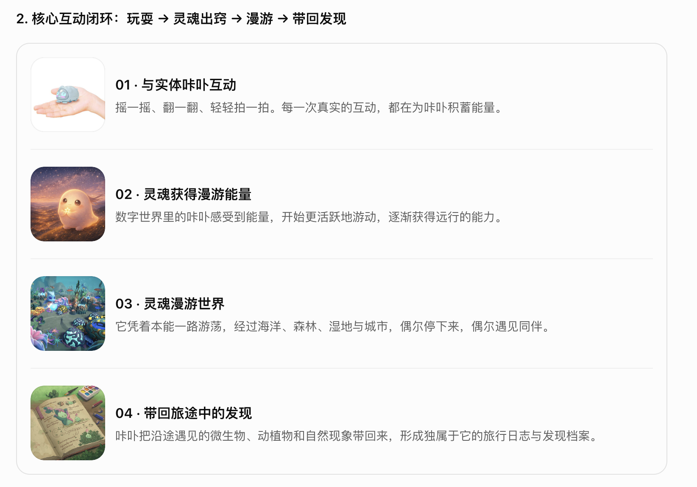
盲盒形式——端盒6——8个
在app里面像海绵宝宝和小蜗：咔卟作为二进制生物寄居在app的各个角落——每个sku的咔卟在app会分散个体活动也会集合形成群体事件活动（在app会发现她们数字状态的变化如：持续蠕动+生命底层进食等个体或者群体活动，也是主打静默而有趣的单细胞生物，让你知道一直有这么个东西在那活着） 儿童玩骰子积累生态旅行能量（想想作为草履虫，就是一直在运动从未在动脑）
然后各种玩法和sku不管是有主题还是随机任意的，每天完成互动指标就能转化为咔卟前进的动力，然后在地球进行长途旅行漫游（因为它们没有头脑，所以只能无脑漫游）然后会经过不同站点，每到一个站点可以解锁数字活着实体的咔卟装扮/自己咔卟的丰富语言解锁等，在过程中会偶遇其他咔卟（当然你有两个咔卟可以结伴而行），然后带回旅行日志，具有科普教育作用比如：带回某种微生物的科普资料。每个sku咔卟认识世界的方式不一样：会带回不同资料：微生物、植物、动物等